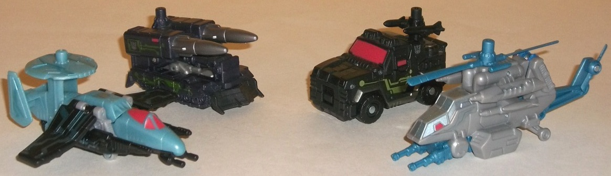
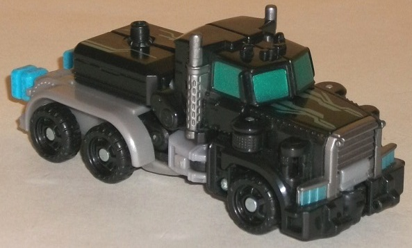
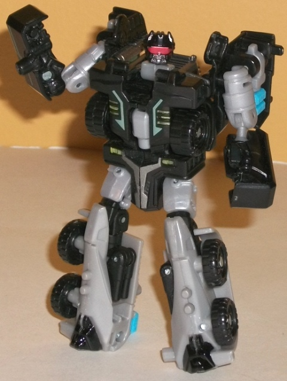
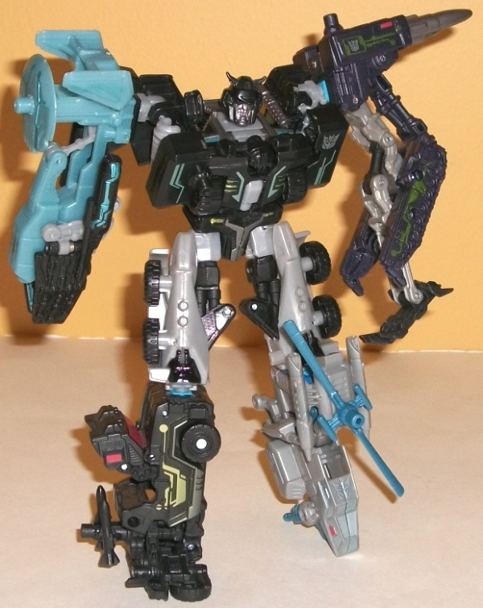

Crankcase
w/ Destrons
Crankcase
w/ Destrons
(NOTE: Because this set is composed of repaints,
this is not a full-blown review. This mainly covers any changes made to
the set and the color scheme, and merely compares it to the original versions
of these molds. For a review on the Aerialbot limbs-- two of which are
repainted for this set-- check out the review of Skyburst
here
.
For a review on the Combaticon limbs-- two of which are also repainted
for this set-- check out the review of Bombshock
here
.
For a review on Huffer, the mold used for Crankcase, go
here
.)
Destrons

Allegiances
: Decepticons
Difficulty of Transformations
: Automatic
Color Schemes
: Black, light milky
gray, light milky pale blue, dull milky blue, dark purplish black, and
some light red, blue, light metallic blue, silver, metallic gunmetal gray,
and pale light metallic green
Individual Rating
: 7.2
The Destrons (which is
the Japanese name for Decepticons), depsite being pulled from two different
limb teams, go together quite well, as they're all military-type vehicles.
In general, the thing that stands out the most about these new decos are
the really cool "circuitry-like" paint apps on all of them. The two black
ones have a nice, pale metallic green color for them-- the color of circuit
boards-- that contrasts quite well with the black (or purpley-black) that
dominates those two molds. The satellite plane (my personal favorite of
the new deco jobs on this team) has some really sweet light metallic blue
circuitry paint apps on his wings and satellite. The helicopter-- the least
impressive of the four-- has a few silver paint apps of a similar design,
but they blend in with his dull light gray too well, to the point where
they're a bit hard to see. (They're also less prevalent on that drone anyways.)
The dull milky blue contrasts fairly well on the helicopter on the few
places where it is used, though, and goes exceptionally well on the satellite
plane, where it meshes with both the black and the light gray, on this
drone pulling together pretty much all the colors on the rest of the drones.
The red windows on the plane also work great for a Decepticon drone and
serve as a nice contrasting color as well, though they look pretty good
on the 4WD jeep drone too. I do wish the 4WD drone had a secondary light
color, however, to offset all that black. The missile carrier drone does--
mainly the silver on the missiles and the light gray used for the core
arm pieces-- but most of that's only visible in limb mode.
No mold changes have
been made to the Destrons (which means the issues the helicopter and 4WD
jeep drones have with combining, sadly, carry over to this version as well).
The Destron limbs take
two very strong molds and two rather weak molds from the first wave of
the line and give all of them (save the helicopter) superior, cool-looking
color schemes with some really spiffy circuitry details. I'd easily recommend
this limb team over the Aerialbots, though because of the weakness of the
helicopter drone as a mold they fall ever-so-short of surpassing the Combaticon
limbs.
Crankcase



Allegiance
: Decepticon
Difficulty of Vehicle/Robot Transformation
:
Very Easy
Difficulty of Torso Transformation
:
Easy
Color Scheme
: Black, light milky
gray, and some metallic gunmetal gray, light red, light sky blue, light
metallic silvery blue, dull metallic yellow, light metallic bluish green,
translucent bluish green, and light metallic blue
Individual Rating
: 8.9
Crankcase here seems
to be a light homage to the G1 Stunticon leader Motormaster, both in terms
of being the leader of a combiner, being a truck, and having a primarily
gray-and-black color scheme. (The combined head also looks a bit like Menasor's,
as well.) The color scheme itself is pretty basic and monochromatic-- the
light blue combiner ports are really the only plastic that breaks the "gray
and black" rule. The robot legs/torso upper legs are particularly boring,
just being that dull shade of gray with little paint beyond a few black
apps. However, that aside, the rest of Crankcase really pops and looks
nice. He does have the same sort of "circuitry" paint apps that the Destron
drone limbs have, with his being a slightly blue-tinted shade of silver
running down the top of his vehicle mode. However, it's more than that--
Crankcase has got a lot of paint apps, period. Metallic gray bumpers and
waist, metallic teal headlight and chest highlights, along with some metallic
yellow "headlight-like" details on his robot chest... there isn't any real
black part on this toy that isn't broken up by a bunch of great, contrasting
colors. My favorite paint app of them all, though, would have to be the
very attractive-looking metallic bluish green used for the windows. Ooo,
I want more of that on my Transformers, Hasbro, please! Crankcase's normal
robot head has light red optics, which are certainly fitting for a Decepticon,
though the combined mode head oddly has a slightly translucent bluish green
that-- while it looks good-- is a smidge too solid to really let the light
piping work.
No mold changes have
been made to Crankcase.
Power Core Combiners
Crankcase is an excellent redeco of one of the better "core" PCC figures,
with tons of great paint apps and a G1 homage to boot! His light milky
gray plastic is rather black, but that's it as far as his colors are concerned.
My personal favorite of the core robots that come with the limb packs.
Crankcase w/ Destrons Bio:
Crankcase didn't start off as a bully.
He started off bitter, mean and small-minded, and the strength granted
by the Power Core process made him capable of taking his misery out on
others. His few moments of happiness all occur when he uses his incredible
might against someone unable to fight back. Then he's right back to being
miserable.
Strength: 7.0
Intelligence: 6.0
Speed: 6.0
Endurance: 9.0
Rank: 3.0
Courage: 5.0
Fireblast: 10.0
Skill: 4.0
Reviews by Beastbot
Back to Power
Core Combiners Index